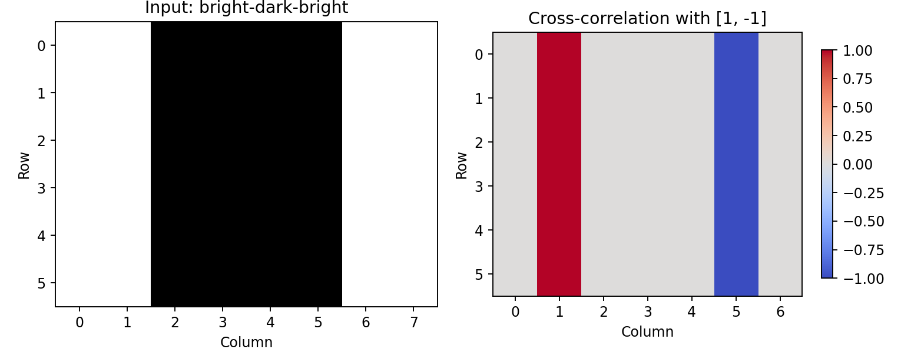
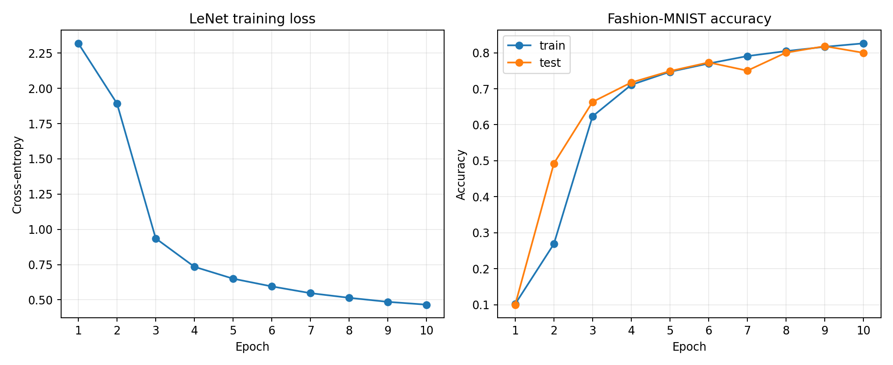
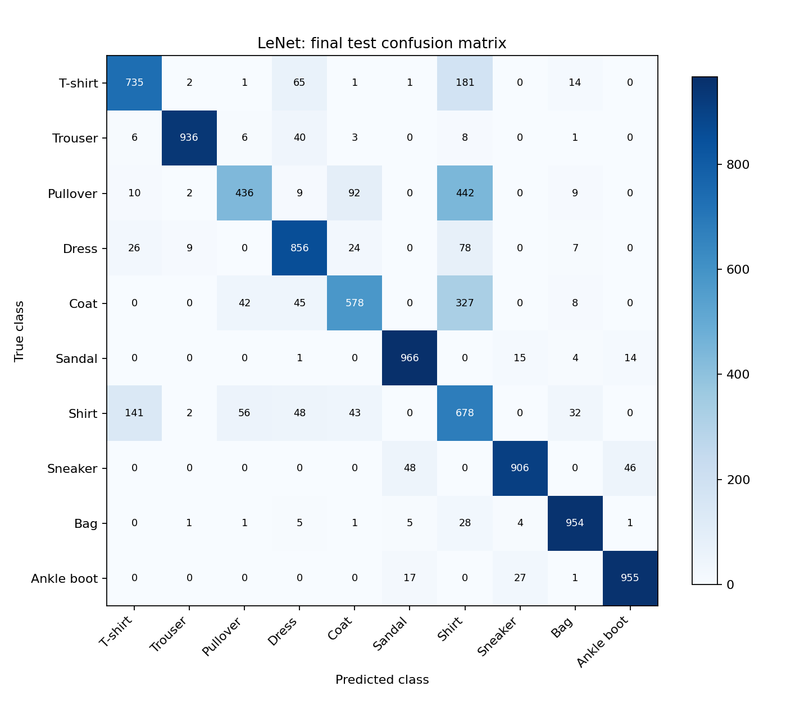

上周整理了模型构造、参数管理和设备迁移，本周开始《动手学深度学习》第6章。先从一个小矩阵的互相关和边缘检测出发，理解填充、步幅、多通道与池化，再把这些组件放进LeNet，在Fashion-MNIST上完成一次10轮训练。
这篇复盘主要记录
- 卷积为什么适合处理图像，以及互相关怎样检测边缘
- 填充、步幅、输入输出通道怎样决定张量形状
- 池化和1×1卷积分别做什么
- LeNet逐层结构、实际训练曲线和类别混淆
一、为什么不直接把图片全部展平
前面的多层感知机把28×28图片变成784维向量。这样仍然可以分类，但模型需要自己学到相邻像素之间的关系，而且每个位置都使用独立权重。卷积则通过局部连接，让一个小窗口先观察相邻区域，再让同一组权重滑过不同位置。
局部连接限制每次观察的范围，权重共享让同一种局部模式可以在不同位置被识别。无偏置、单输入输出通道的3×3卷积只有9个权重，并不随图片面积增加而增加。
平移等变可以理解为输入中的模式移动时，特征响应也跟着移动；这不等于模型对所有平移都完全不变。边界填充、步幅、池化以及最后的分类层都会影响实际表现。
二、先手算一次二维互相关
深度学习框架里名为卷积的运算，通常实际计算的是互相关：核不翻转，直接在窗口里逐元素相乘再求和。数学卷积会先翻转核；对可学习的核来说，这不妨碍学习相应模式。
X = torch.tensor([[0., 1., 2.],
[3., 4., 5.],
[6., 7., 8.]])
K = torch.tensor([[0., 1.], [2., 3.]])
corr2d(X, K)
# tensor([[19., 25.],
# [37., 43.]])左上角的19来自0×0＋1×1＋3×2＋4×3。窗口向右移动一格，就得到25。从零实现先计算每个窗口，再把标量结果堆叠起来；测试既对照了PyTorch输出，也对照了输入和核的梯度。
三、用相邻像素差检测竖直边缘
书中的示例把6×8图片中间几列置为0，两边保持1。核[1,−1]计算左像素减右像素：亮到暗的边界得到正响应，暗到亮的边界得到负响应，平坦区域响应为0。

把图片转置后，同一个核沿水平方向看到的值不再变化，本例输出全0。这说明核有方向性，并不是看到任何边缘都会响应。
下一步不直接指定[1,−1]，而是用Conv2d和目标边缘响应学习它。学习率0.03，训练10步，本次核变成[1.0487, -0.9277]；平方误差和从31.6313降到更新后的0.2215。它已接近目标，但没有精确等于目标核。
四、填充与步幅决定输出尺寸
不填充且每次移动一格时，高和宽都会因卷积核而缩小。填充在边缘补值；步幅决定每次移动多少格。以下公式假设dilation为1：
输出尺寸 = floor((输入尺寸 + 2 × 每侧填充 − 核尺寸) / 步幅) + 1
| 核尺寸 | 每侧填充 | 步幅 | 输出高宽 |
|---|---|---|---|
| 3×3 | 1×1 | 1×1 | 8×8 |
| 5×3 | 2×1 | 1×1 | 8×8 |
| 3×3 | 1×1 | 2×2 | 4×4 |
| 3×5 | 0×1 | 3×4 | 2×2 |
表中的每一组都实际执行并核对了形状。PyTorch的padding=(1,1)表示高方向上下各补1、宽方向左右各补1，容易与教材公式里的总填充量混淆。
五、输入通道求和 输出通道堆叠
图像和特征图通常不止一个通道。一个输出通道需要分别处理所有输入通道，再把结果相加；需要多个输出通道时，就准备多组这样的核。
卷积核形状 = 输出通道数 × 输入通道数 × 核高 × 核宽
# 一张图片，3个输入通道
X.shape # (1, 3, 5, 6)
# 两个输出通道，每个都观察全部3个输入通道
K.shape # (2, 3, 2, 3)
F.conv2d(X, K).shape # (1, 2, 4, 4)本周从零实现了输入通道求和与输出通道堆叠，并与Conv2d对照。输入通道不匹配时明确报错，避免直接zip遍历时悄悄漏算通道。
六、1×1卷积不是没有作用
1×1核在空间上只看一个位置，但可以观察该位置的所有输入通道，并组合成新的输出通道。步幅为1且不填充时，它保持高宽不变，改变的是通道表示。
# X: (输入通道, 高, 宽)，K: (输出通道, 输入通道, 1, 1)
features = X.reshape(in_channels, height * width)
weights = K.reshape(out_channels, in_channels)
Y = (weights @ features).reshape(out_channels, height, width)这相当于在每个位置应用同一组跨通道线性变换，并不将整张图片展平后一次性连接所有空间位置。本次矩阵写法与直接互相关的结果在测试容差内一致。
七、池化怎样缩小特征图
最大池化取窗口内最大值，平均池化取均值。它们没有可学习权重，逐通道执行，通常用步幅降低空间尺寸。本周无填充、步幅1的从零实现，对输入0至8组成的3×3矩阵得到：
2×2最大池化：[[4, 5], [7, 8]]
2×2平均池化：[[2, 3], [5, 6]]这里特意使用步幅1与教材从零函数保持一致。PyTorch池化层默认步幅通常等于核尺寸；如果没有明确设置，拿两种实现直接比较就可能出现形状差异。测试还覆盖了负数输入和非正方形窗口。
池化可以减弱某些局部位置变化的影响，但不能保证整个模型对任何平移都不敏感。LeNet里使用的是平均池化，本次保持教材设置。
八、LeNet从图片到十个类别
本周复现的是教材适配Fashion-MNIST的LeNet版本：28×28单通道输入，两层卷积配合sigmoid与平均池化，接三层全连接。它不等同于历史原版LeNet的全部实现细节。
| 层 | 输出形状 批量为1 |
|---|---|
| 输入 | 1 × 1 × 28 × 28 |
| Conv2d | 1 × 6 × 28 × 28 |
| Sigmoid | 1 × 6 × 28 × 28 |
| AvgPool2d | 1 × 6 × 14 × 14 |
| Conv2d | 1 × 16 × 10 × 10 |
| Sigmoid | 1 × 16 × 10 × 10 |
| AvgPool2d | 1 × 16 × 5 × 5 |
| Flatten | 1 × 400 |
| Linear | 1 × 120 |
| Sigmoid | 1 × 120 |
| Linear | 1 × 84 |
| Sigmoid | 1 × 84 |
| Linear | 1 × 10 |
模型总共61706个可训练参数。最后输出的是10个类别分数，直接传给CrossEntropyLoss；训练时不用先做softmax。逐层打印形状，能解释为什么第一层全连接的输入是16×5×5=400。
九、10轮实际训练记录
数据使用原有Fashion-MNIST缓存，训练60000张、测试10000张。固定随机种子42，卷积和全连接权重使用Xavier均匀初始化，偏置保留PyTorch默认值；SGD学习率0.9，批量256，训练10轮，设备为RTX 4060 Laptop GPU。

| 轮次 | 训练交叉熵 | 训练准确率 | 测试准确率 |
|---|---|---|---|
| 1 | 2.3193 | 10.17% | 10.00% |
| 2 | 1.8923 | 26.87% | 49.23% |
| 3 | 0.9360 | 62.35% | 66.35% |
| 4 | 0.7345 | 71.09% | 71.75% |
| 5 | 0.6501 | 74.71% | 74.91% |
| 6 | 0.5953 | 77.02% | 77.32% |
| 7 | 0.5475 | 79.08% | 75.03% |
| 8 | 0.5144 | 80.47% | 80.04% |
| 9 | 0.4858 | 81.66% | 81.83% |
| 10 | 0.4658 | 82.62% | 80.00% |
第一轮测试准确率只有10%，第二轮升到49.23%，说明开始阶段还没有学好。最终训练交叉熵为0.4658，训练准确率82.62%，测试准确率80.00%。这里记录的是预先设定的第10轮结果，没有用测试集选最佳轮次。
早期学习慢可以作为后续研究初始化、激活函数和学习率的线索，但当前没有对照实验，不能单独断言某一因素就是原因。上周MLP训练结果来自不同结构和运行条件，也不能凭一次数字比较证明LeNet普遍更好。
十、混淆矩阵里哪些类别更难

本次召回率较低的是套头衫（43.6%）和外套（57.8%）。最大的单向类别混淆是套头衫被预测成衬衫，共442张。裤子、凉鞋、包和短靴的召回率均超过93%。
类别召回率表示某个真实类别被正确识别的比例，不是“预测成这个类别的图片有多准”。目前只做了类别层面的统计，没有逐张审查错误图片；对具体错因的判断还需要回到样本。
十一、本周验证与下周安排
9项自动测试检查了互相关数值与梯度、边缘符号、多通道、1×1卷积、池化、无效输入、自定义层参数更新、LeNet训练步骤和混淆矩阵计数。模型训练后保存state_dict，重新构建同结构模型并加载，对8张测试图片的恢复预测逐位一致。
代码继续按01至08拆成独立示例，数据加载复用第十二周函数；Windows使用num_workers=0。教材的d2l训练与绘图工具改成普通PyTorch和Matplotlib，参数更新使用优化器，原有学习目标和LeNet结构保持一致。
本次是一组固定超参数下的单次训练，测试集每轮用于记录表现，没有独立验证集、重复种子或系统调参。下周开始第7章现代卷积网络，先看AlexNet与VGG，再练习NiN和GoogLeNet里的1×1卷积与多分支结构；同时继续复习卷积尺寸、感受野和错误样本分析。
局部连接权重共享多通道池化LeNet